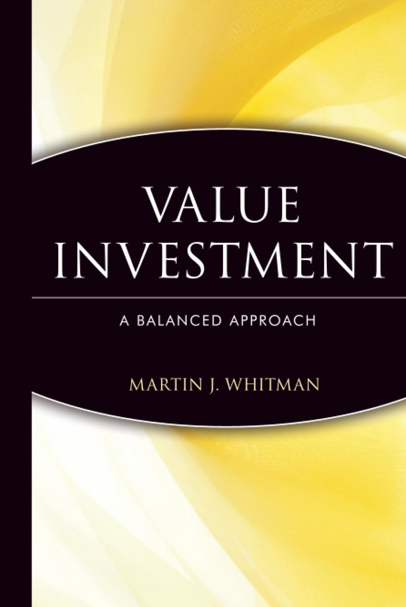

马丁·惠特曼（Martin J. Whitman，1924—2018）是美国价值投资领域最具个人色彩的实践者之一。他1949年毕业于雪城大学，此后在华尔街辗转多家投资机构，1990年创立第三大道管理公司（Third Avenue Management）并掌舵旗舰基金第三大道价值基金（Third Avenue Value Fund）。在他亲自管理的二十余年间，该基金年均回报约11.1%，明显高于同期标普500指数的9%。惠特曼不同于主流格雷厄姆学派，他更偏爱财务状况稳健的“隐蔽型”公司——那些账面资产被严重低估、但本身具备自救或重组能力的企业。《价值投资：一种均衡的方法》出版于1999年，由约翰·威利出版社（John Wiley & Sons）发行，是惠特曼将其数十年实战经验和独特投资哲学系统整理后的集大成之作。
本书最核心的贡献，是对“价值投资”这一概念的重新界定。惠特曼认为，流行于学界的现代金融理论（包括资本资产定价模型和有效市场假说）过于依赖股价作为信息载体，而忽略了公司本身的资产质量和财务结构。他明确将自己的方法与格雷厄姆式的净净值（net-net）选股框架区分开来——后者过于机械，而惠特曼更强调对公司控制权价值和私有化价值的判断。书中提出了“安全、廉价、优质管理”三要素框架：投资者应当寻找资产负债表坚实、现金充裕或债务可控、管理层有能力创造价值的公司，以私人商业买家或收购方的视角为股票定价，而非仅凭市价波动做出买卖决策。他对并购、重组、破产重整等特殊事件的分析尤为精到，因为这些恰是第三大道基金的核心猎场。
惠特曼在书中还花了相当篇幅批评华尔街的主流研究范式。他认为，卖方分析师对每股盈利的执念和对股价目标的预测，是一种系统性的认知误导——利润表固然重要，但资产负债表和现金流量表才是评估企业内在价值的基础。他对GAAP会计准则也提出了有针对性的批评，指出会计报告的目的与投资分析的目的存在根本分歧：前者服务于债权人和税务机构，后者需要还原企业作为持续运营主体的真实经济价值。这种“从资产负债表出发”的分析路径，在当时的投资界颇为另类，却也令本书在专业圈内获得了持久的口碑。
东南资产管理公司（Southeastern Asset Management）董事长O·梅森·霍金斯（O. Mason Hawkins）称赞本书是“所有严肃投资人必读之作，提供了一套理性、守纪、规避风险的长期复利框架”。普林斯顿经济学家威廉·鲍莫尔（William J. Baumol）评价道：“作者深知所论之物的真谛。他数十年极为成功的职业投资经历、扎实的学术训练，以及在顶尖大学执教的经历，都在这本书里留下了烙印。”本书目前尚无官方授权中文版，对于有志于深入研究美国式价值投资——尤其是特殊情境与困境投资方向——的读者，英文原版仍是不可绕过的一手文献。